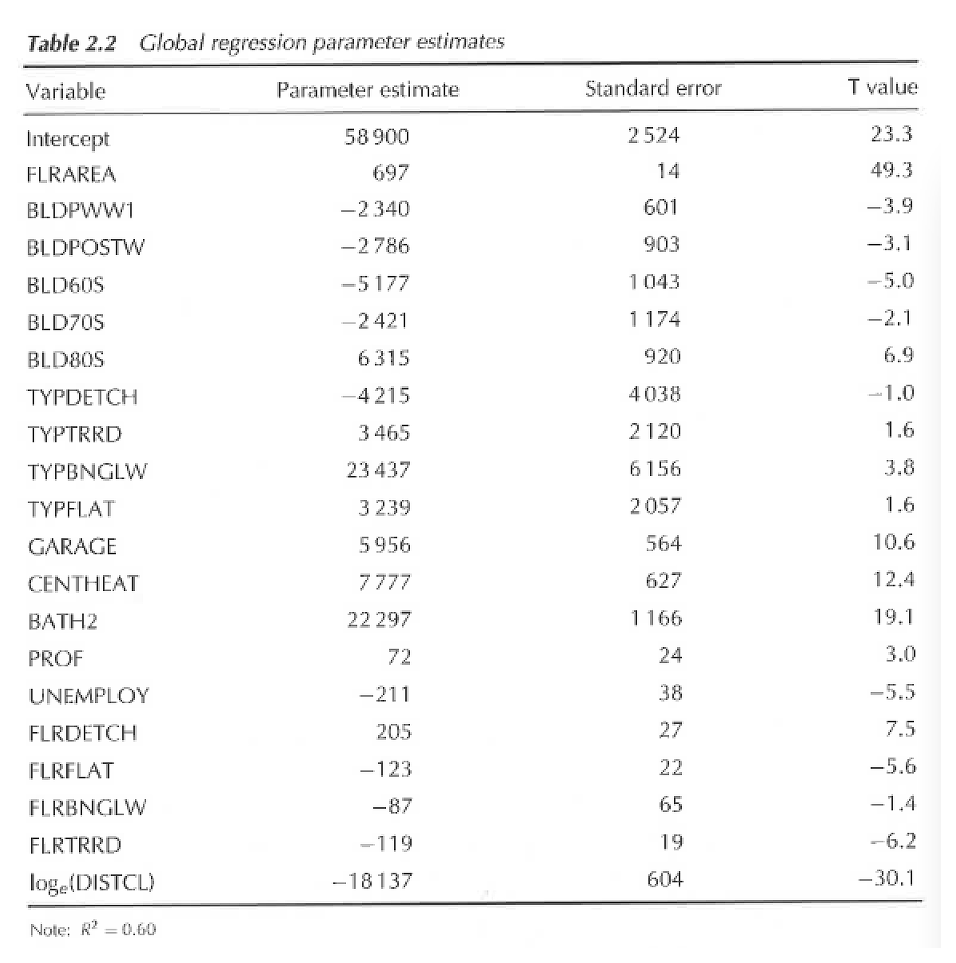
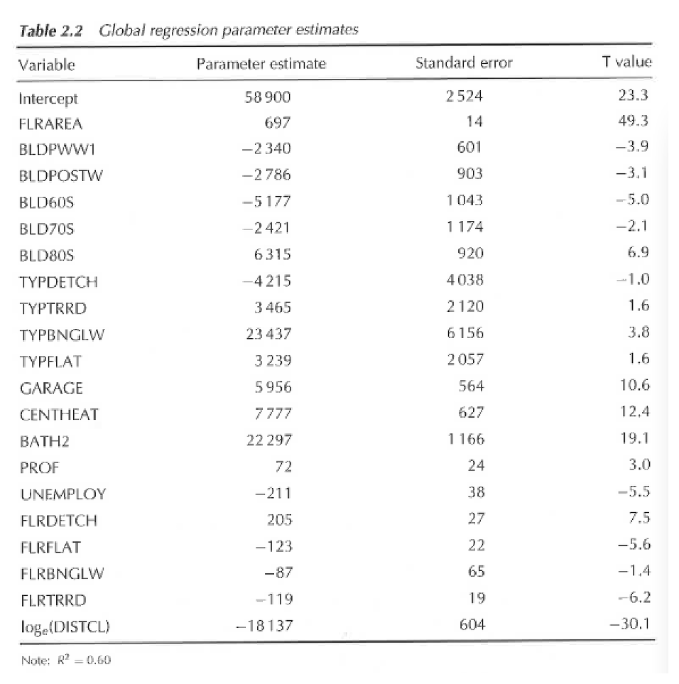

image source commons.wikimedia.org
image source flickr by Tony Hisgett
# A tibble: 4 x 6
label area n in_density out_density weight
1 A 2222. 22 0.00990 0.00740 1.34
2 B 3139. 23 0.00733 0.00803 0.912
3 C 5044. 20 0.00396 0.0105 0.376
4 D 1948. 32 0.0164 0.00625 2.63
image source earthobservatory.nasa.gov
Francis Galton’s illustration of correlation, 1875 image source commons.wikimedia.org
Lake Hillier, Australia apparently it's really pink... image source culturauniversale.blogspot.com

houses in London Fields
image source flickr.com
by Matthew Rutledge
 

image source geograph.org.uk by Matt Harrop CC2.0 license